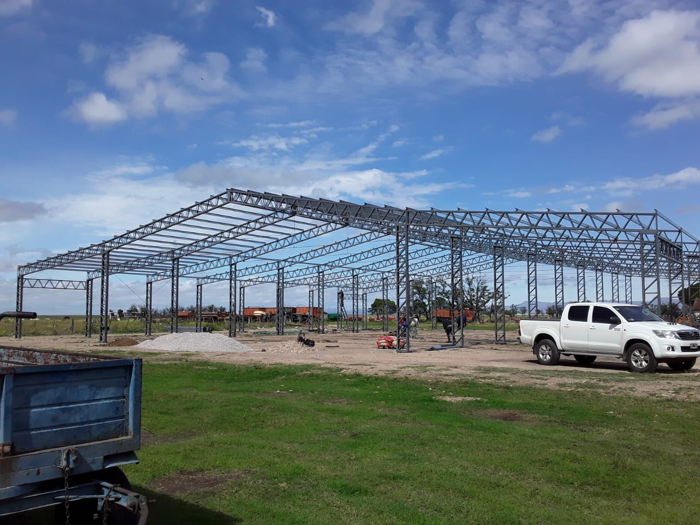
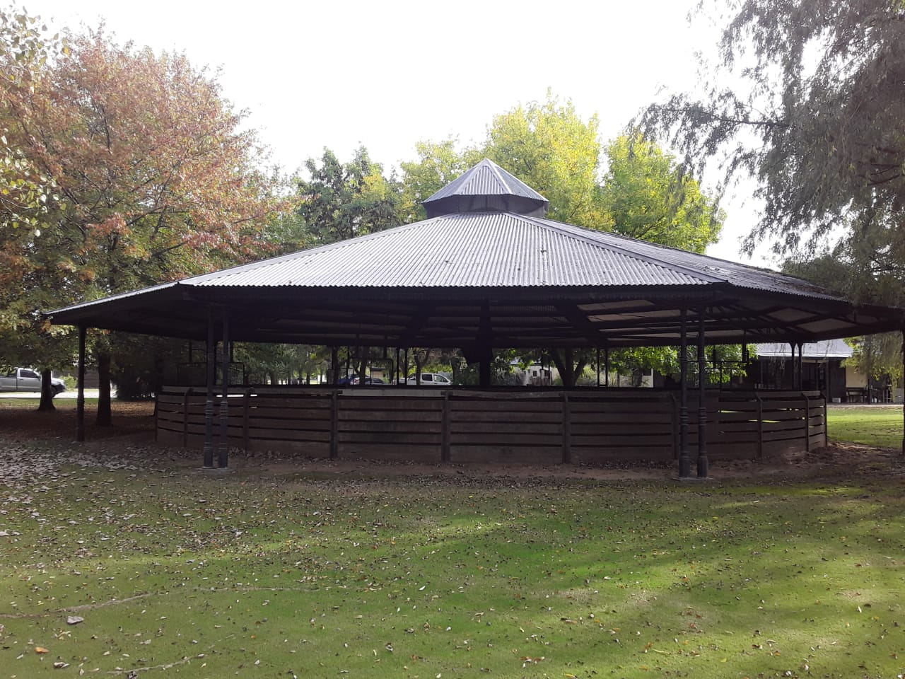
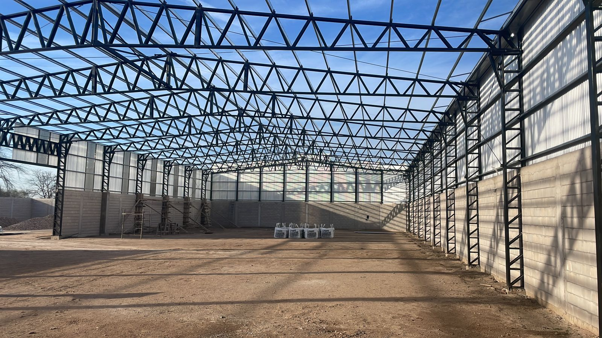
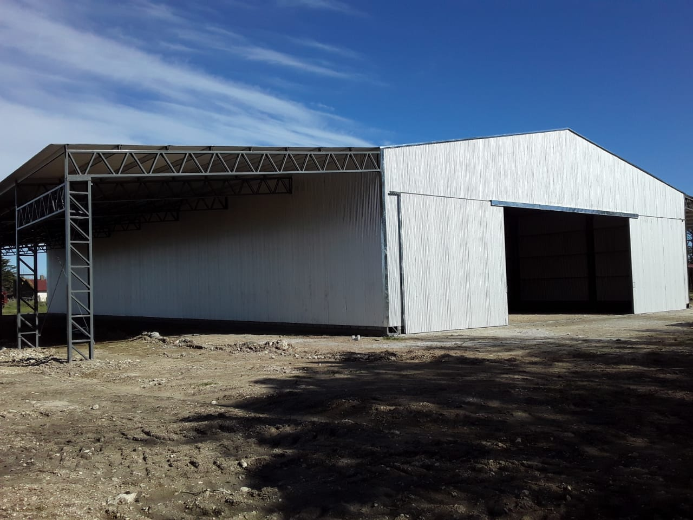
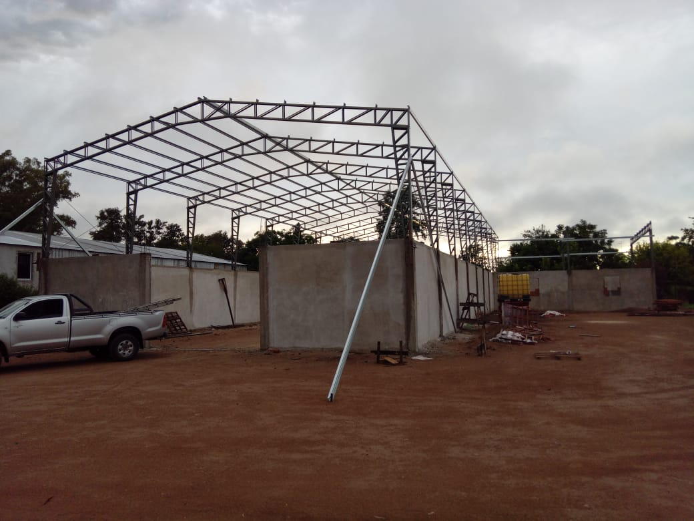
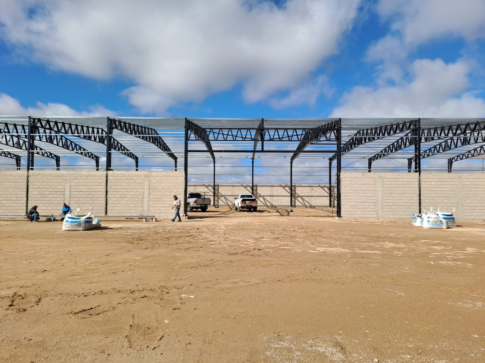

Estructuras metálicas a medida
Tinglados y Galpones
Estructuras calculadas, armadas en taller y montadas en obra.

Estructuras calculadas, armadas en taller y montadas en obra.
Diseñamos y construimos tinglados y galpones para campo, industria y depósito: guardado de maquinaria, acopio de granos, hangares, talleres y más.






Visitamos el terreno, tomamos medidas y definimos con el cliente el uso, la altura y tipo de techo de la estructura. De ahí sale el plano de obra.
Calculamos columnas, cabreadas y correas según diversos factores de la zona, para que la estructura resista posibles revestidas climáticas y el paso del tiempo.
Cortamos, soldamos y armamos columnas, cabreadas y correas en nuestro taller, con control de escuadra y terminación antes de salir a obra.
Anclamos las bases, izamos la estructura y la arriostramos. Cada unión se verifica antes de continuar con el siguiente tramo.
Colocamos chapa, aislantes, cerramientos, y pintura final para que la estructura quede lista.
Contanos las medidas y el uso que le vas a dar, y te armamos un presupuesto sin cargo.